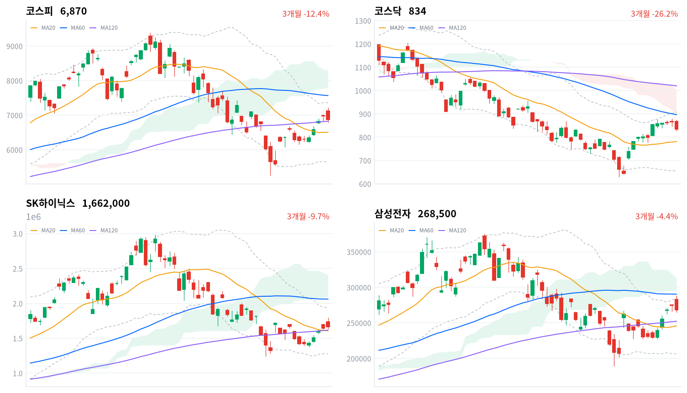
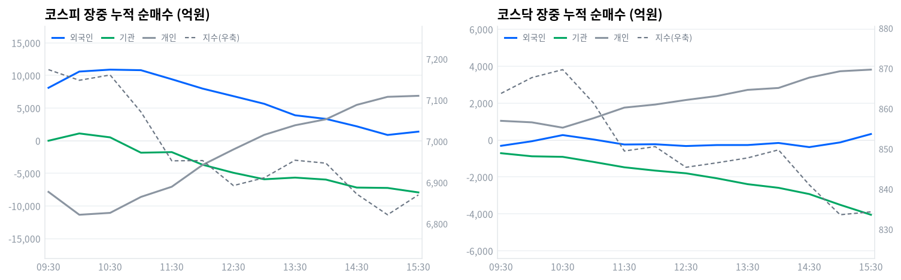

동인 코스피는 전일 종가(6,977.94포인트) 대비 상승 출발한 개장가 7,127.77포인트에서 한때 7,216.62포인트(일중 고가)까지 올라 7,200선을 넘봤으나, 오후 들어 낙폭을 키우며 6,869.83포인트(-1.55%)로 마감해 6거래일 연속 이어온 상승 행진을 마감했다. 코스닥도 866.59포인트에서 출발해 872.59포인트(일중 고가)까지 올랐다가 834.20포인트(-3.52%)로 급락 마감했다. 장 초반 반도체 강세로 출발했던 흐름은 미국-이란 지정학 긴장 고조(국제유가 배럴당 100달러 상회)가 부각되면서 위험회피 매물로 뒤집혔고, 코스닥에서는 최근 급등했던 2차전지·바이오 종목군(에코프로 -6.94%, 에코프로비엠 -6.51%, 레인보우로보틱스 -6.19%, 알테오젠 -5.10%, ABL바이오 -5.11%)에 차익실현이 집중됐다(이투데이·파이낸셜뉴스·뉴스핌·디지털데일리 등 보도).
크로스에셋·수급 정합성 코스피 수급은 기관이 7,951억원 순매도(당일 잠정)하며 하락을 주도했고 외국인은 914억원 소폭 순매수(당일 잠정), 개인은 7,413억원 순매수(당일 잠정)에 그쳐 지수 방향과 기관 매도가 정합됐다. 장중 궤적을 보면 외국인 누적 순매수는 11시09분 1조1220억원까지 늘렸다가 15시03분 738억원까지 계속 줄였고, 기관은 10시42분 순매수에서 순매도로 돌아선 뒤 15시21분 -7,923억원까지 매도를 늘렸는데 이 전환 시점은 코스피가 11시(7,071.17포인트)부터 11시30분(6,952.53포인트)까지 낙폭을 키운 구간과 거의 겹친다. 프로그램 매매에서도 코스피 비차익이 -1조885억원 순매도로 전체 순매도(-1조703억원)의 대부분을 차지해, 오늘 지수 하락을 이끈 매도세가 선물 연계 차익거래가 아니라 방향성 베팅에 가까웠음을 보여준다. 업종별로는 석유와가스(+1.87%, breadth 0.632)·해운사(+6.14%, breadth 0.545)가 유가 상승 재료에 폭넓게 올랐지만 반도체와반도체장비(-0.93%, breadth 0.304)를 포함해 대다수 업종이 함께 하락해, 이번 조정이 특정 업종이 아니라 시장 전반의 위험회피였음을 시사한다.
다음 촉매·확인 트리거 기술적으로 코스피는 20일선(6,505.01포인트)을 5.61% 웃돌지만 120일선(6,823.9포인트)과는 0.67%p 차이로 근접해 있어, 이 지지선 붕괴 여부가 다음 거래일 낙폭 확대 여부를 가르는 1차 확인 지점이다. 지정학 리스크는 유엔 안보리 논의나 호르무즈 통항 재개 등 다음 이벤트 일정이 미확정이라 국제유가 100달러 상단 돌파 여부와 정유·항공주 반응을 지켜봐야 하고, 8월27일 예정된 한은 금통위에서는 매파적 동결 여부가 국고채 3년물(3.847%, 기준금리 대비 109.7bp 위)의 추가 상승 압력을 좌우할 전망이다.
| 지수 | 종가 | 등락률 | 일중 고가 | 일중 저가 |
|---|---|---|---|---|
| 코스피 | 6,869.83 | -1.55% | 7,216.62 | 6,788.78 |
| 코스닥 | 834.20 | -3.52% | 872.59 | 827.97 |
코스피는 전일 종가(6,977.94포인트) 대비 급등 출발한 7,127.77포인트에서 09시 7,131.30포인트, 09시30분 7,173.91포인트까지 오름세를 이어갔다(일중 고가 7,216.62포인트는 이 구간에서 형성된 것으로 추정된다). 이후 매물이 출회되며 10시 7,148.05포인트, 10시30분 7,160.89포인트로 소폭 반등했지만 11시 7,071.17포인트, 11시30분 6,952.53포인트로 낙폭을 키워 7,000선이 무너졌다.
낮 12시 6,953.15포인트에서 잠시 멈췄던 하락은 12시30분 6,892.41포인트까지 이어졌고, 13시 6,911.38포인트·13시30분 6,953.95포인트로 반짝 반등했다가 14시 6,946.81포인트·14시30분 6,871.97포인트·15시 6,821.60포인트로 재차 밀렸다(일중 저가 6,788.78포인트는 14시30분~15시 구간에서 형성된 것으로 추정된다). 막판 15시30분 6,869.80포인트로 낙폭을 일부 되돌리며 6,869.83포인트(-1.55%)로 마감해, 장중 터치했던 7,200선 안착에는 끝내 실패했다.
코스닥은 866.59포인트에서 출발해 09시 861.87포인트로 잠시 밀렸다가 09시30분 863.75포인트, 10시 867.68포인트, 10시30분 869.66포인트까지 오름세를 회복했다(일중 고가 872.59포인트는 10시~10시30분 구간에서 형성된 것으로 추정된다). 이후 11시 861.35포인트, 11시30분 849.43포인트로 낙폭을 키웠고 12시 850.53포인트·12시30분 845.39포인트·13시 846.50포인트·13시30분 847.72포인트·14시 849.72포인트로 840포인트대 초반에서 등락하다 14시30분 841.02포인트, 15시 833.59포인트로 재차 밀렸다(일중 저가 827.97포인트는 14시30분~15시 구간에서 형성된 것으로 추정된다).
15시30분 834.31포인트를 거쳐 834.20포인트(-3.52%)로 급락 마감했다.
오늘 하락의 직접 촉매는 미국-이란 간 군사적 긴장 재고조다. 호르무즈 해협 봉쇄와 유전시설 타격 우려가 부각되며 국제유가가 배럴당 100달러를 상회했고, 6거래일 연속 상승 이후 나온 이 지정학 리스크가 위험회피 매물을 촉발해 코스피·코스닥 동반 조정으로 이어졌다(이투데이·파이낸셜뉴스·뉴스핌·디지털데일리 등 보도). 코스닥에서는 최근 급등했던 2차전지·바이오 종목군에 차익실현이 집중돼 하락폭이 코스피보다 컸다.

코스피 코스피는 6,869.83포인트로 마감해 20일선(6,505.01포인트)을 5.61% 웃돌고 120일선(6,823.9포인트)도 0.67% 소폭 상회하지만, 60일선(7,566.14포인트)에는 9.2% 못 미쳐 이동평균이 혼조 배열을 이루고 있다. 일목균형표에서는 전환선(6,687.68)이 기준선(6,608.66)을 웃돌아 단기 모멘텀은 살아있지만, 가격 자체는 구름대(7,781.17~8,296.46포인트) 아래에 머물러 있어 추세 전환에는 이르지 못했다. 상승 시나리오는 20일 스윙 고점(7,424.18포인트) 돌파가 1차 트리거이며, 이를 넘어서면 구름대 하단(7,781.17포인트)이 다음 저항이다. 하락 시나리오는 120일선(6,823.9포인트) 이탈이 1차 트리거로, 이 경우 20일선(6,505.01포인트)까지 되밀릴 수 있고 20일·60일 공통 스윙 저점(5,262.77포인트)이 최후 지지선이다. 볼린저밴드 %b는 0.714로 중심선(6,505.01포인트)과 상단(7,358.97포인트) 사이 상단권에 위치한다.
코스닥 코스닥은 834.20포인트로 마감해 20일선(779.52포인트)을 7.01% 웃돌지만 60일선(890.64포인트)·120일선(1,016.23포인트)은 각각 6.34%·17.91% 밑돌아 이동평균은 역배열을 유지하고 있다. 일목균형표에서는 전환선(827.94)이 기준선(755.14)을 웃돌아 단기 모멘텀은 아직 우호적이지만, 가격은 구름대(894.42~1,003.8포인트) 아래에 머물러 있다. 상승 시나리오는 20일 스윙 고점(879.29포인트) 돌파가 1차 트리거이며, 이를 넘어서면 구름대 하단(894.42포인트)이 다음 저항이다. 하락 시나리오는 전환선(827.94)·기준선(755.14) 아래로 밀리는 것이 트리거로, 1차 지지는 20일선(779.52포인트)이고 이마저 무너지면 20일·60일 공통 스윙 저점(630.99포인트)이 최후 지지선이다. 볼린저밴드 %b는 0.714로 상단(907.31포인트) 인근에 위치해 단기 과열 신호가 남아있다.
SK하이닉스 SK하이닉스는 166만2000원으로 마감해 20일선(160만6450원)을 3.46%, 120일선(161만6166.67원)을 2.84% 웃돌지만 60일선(206만833.33원)에는 19.35% 못 미쳐 이동평균이 혼조 배열이다. 일목균형표에서는 전환선(158만2500원)이 기준선(177만5500원) 아래에 있고 가격도 구름대(208만5000~240만7250원) 아래에 머물러 있다. 상승 시나리오는 기준선(177만5500원) 회복이 1차 트리거이며, 이를 넘어서면 20일 스윙 고점(200만6000원)이 다음 목표다. 하락 시나리오는 20일선·120일선이 겹치는 160만6000~161만6000원대 이탈이 트리거로, 이 경우 20일·60일 공통 스윙 저점(124만6000원)이 최후 지지선이다. 볼린저밴드 %b는 0.584로 중심선(160만6450원) 부근에 위치한다.
삼성전자 삼성전자는 26만8500원으로 마감해 20일선(24만5700원)을 9.28%, 120일선(25만2278.75원)을 6.43% 웃돌지만 60일선(29만375원)에는 7.53% 못 미쳐 이동평균이 혼조 배열이다. 볼린저밴드 %b는 0.792로 상단(28만4788.87원)에 근접해 단기 과열 신호가 남아있다. 일목균형표에서는 전환선(25만7750원)이 기준선(24만3600원)을 웃돌아 단기 모멘텀은 우호적이지만, 가격은 구름대(29만5250~31만3125원) 아래에 머물러 있다. 상승 시나리오는 20일 스윙 고점(28만8000원) 돌파가 1차 트리거이며, 이를 넘어서면 구름대 하단(29만5250원)이 다음 저항이고 60일 스윙 고점(37만4500원)이 궁극적 목표다. 하락 시나리오는 20일선(24만5700원) 이탈이 트리거로, 20일·60일 공통 스윙 저점(18만9200원)이 최후 지지선이다.
위 레벨은 kr_technical.json의 이동평균·볼린저밴드·일목균형표·스윙 고저를 기계적으로 계산한 것으로, 투자 권유가 아니다.
코스피 수급은 기관이 7,951억원 순매도(당일 잠정)하며 하락을 주도했고, 개인은 7,413억원 순매수(당일 잠정)로 저가 매수에 나섰다. 외국인은 914억원 소폭 순매수(당일 잠정)에 그쳐 최근 이어지던 대규모 매수세가 크게 줄었다.
| 코스피 (억원, 당일 잠정) | 개인 | 외국인 | 기관 |
|---|---|---|---|
| 2026-08-18 | +7,413 | +914 | -7,951 |
| 코스닥 (억원, 당일 잠정) | 개인 | 외국인 | 기관 |
|---|---|---|---|
| 2026-08-18 | +3,905 | +366 | -4,176 |
코스피·코스닥 모두 기관이 순매도 주체였고(각각 -7,951억원·-4,176억원, 당일 잠정) 개인이 순매수로 맞섰다(+7,413억원·+3,905억원) — 지수 급락 국면에서 개인이 저가 매수에 나선 전형적인 구도다. 외국인은 두 시장에서 모두 소폭 순매수(+914억원·+366억원)에 그쳐 방향은 지수 하락과 어긋나지만 규모가 작아, 오늘 조정의 실질적 매도 주체는 외국인이 아니라 기관이었다고 판정할 수 있다.

| 시각 | 코스피 (억원) | 코스닥 (억원) | ||||
|---|---|---|---|---|---|---|
| 개인 | 외국인 | 기관 | 개인 | 외국인 | 기관 | |
| 09:30 | -7,845 | 8,113 | -1 | 1,042 | -311 | -712 |
| 10:00 | -11,349 | 10,600 | 1,114 | 960 | -64 | -879 |
| 10:30 | -11,060 | 10,896 | 515 | 671 | 270 | -909 |
| 11:00 | -8,613 | 10,810 | -1,836 | 1,185 | 32 | -1,184 |
| 11:30 | -7,053 | 9,424 | -1,747 | 1,758 | -241 | -1,475 |
| 12:00 | -3,709 | 7,989 | -3,683 | 1,924 | -227 | -1,654 |
| 12:30 | -1,341 | 6,830 | -4,914 | 2,171 | -323 | -1,800 |
| 13:00 | 901 | 5,657 | -5,909 | 2,384 | -270 | -2,071 |
| 13:30 | 2,367 | 3,899 | -5,654 | 2,719 | -269 | -2,389 |
| 14:00 | 3,284 | 3,345 | -5,959 | 2,822 | -157 | -2,586 |
| 14:30 | 5,493 | 2,206 | -7,180 | 3,383 | -382 | -2,925 |
| 15:00 | 6,727 | 883 | -7,239 | 3,728 | -127 | -3,507 |
| 15:30 | 6,883 | 1,392 | -7,923 | 3,815 | 327 | -4,046 |
코스피에서 외국인 누적 순매수는 부호 전환 없이(turns 비어있음) 종일 매수 우위를 유지했지만, 그 규모는 11시09분 1조1220억원에서 15시03분 738억원까지 계속 줄었다. 기관은 09시19분 순매도에서 순매수로 잠깐 돌아섰다가(그 구간 정점은 09시21분 1,112억원) 10시42분 다시 순매도로 전환해 15시21분 -7,923억원까지 매도를 늘렸는데, 이 전환 시점(10시42분)은 코스피가 11시(7,071.17포인트)부터 11시30분(6,952.53포인트)까지 낙폭을 키운 구간과 거의 겹친다 — 기관 매도 전환이 오전 급락의 방아쇠 중 하나였던 것으로 보인다.
개인은 반대로 12시51분 순매도에서 순매수로 돌아서(그 구간 정점은 15시04분 7,250억원) 오후 저가 매수에 나섰지만, 지수 자체는 15시(6,821.60포인트) 부근까지 계속 눌린 뒤 15시30분에야 반등했다 — 개인의 저가 매수가 낙폭을 일부 방어했으나 지수를 곧바로 되돌리지는 못했다.
코스닥에서는 개인이 부호 전환 없이(turns 비어있음) 종일 순매수 기조를 유지했고, 기관도 마찬가지로 전환 없이 종일 순매도 기조를 이어갔다. 외국인만 하루 다섯 차례 방향을 바꿨다 — 10시03분 순매도에서 순매수로 전환했다가(그 구간 정점 10시15분 361억원) 10시48분 다시 순매도로 돌아섰고, 11시00분 재차 순매수로(정점 11시01분 90억원) 전환한 뒤 11시13분부터는 순매도 기조를 오래 유지하며 14시31분 -421억원까지 매도를 늘렸다가, 15시09분에야 다시 순매수로 돌아서 정규장 마감(15시30분) +327억원으로 마쳤다.
코스닥 지수는 오전 상승분을 반납하며 14시30분(841.02포인트)·15시(833.59포인트)까지 계속 밀렸는데, 외국인이 순매도를 가장 오래 유지한 11시13분~15시09분 구간과 낙폭 확대 구간이 겹쳐 외국인 매도가 코스닥 급락의 주된 동력 중 하나였던 것으로 보인다.
기관 누적선을 세부 주체로 나눠보면 코스피 기관 매도(정규장 마감 -7,923억원)의 약 80%(-6,304억원)가 금융투자 계정에서 나왔고, 정책성 장기자금인 연기금등은 오전엔 순매수(10시 +1,731억원)로 출발했으나 오후 들어 매도로 돌아서 정규장 마감 -807억원에 그쳐 규모가 작았다 — 오늘 기관 매도의 주된 축은 금융투자였다고 판정할 수 있다. 이는 바로 아래 프로그램 매매의 코스피 비차익 순매도(-1조885억원)와 방향이 일치하지만 규모 차이가 커, 금융투자 계정의 매도가 좁은 의미의 프로그램 매매를 넘어 일반 매매까지 포함하고 있음을 보여준다.
코스닥에서는 금융투자가 정규장 마감 -3,352억원으로 기관 전체(-4,046억원)의 83%를 차지해 매도 주체 역시 금융투자였다. 다만 코스닥 프로그램 매매(비차익 +363억원·차익 -17억원·전체 +346억원, 당일 잠정)는 오히려 소폭 순매수를 기록해 방향이 엇갈리는데, 이는 코스닥 기관의 매도세가 프로그램이 아니라 금융투자 계정의 일반 매매에서 대부분 나왔다는 뜻이다.
정규장 마지막 관측치(15시30분)와 확정치를 비교하면 코스피 외국인은 +1,392억원에서 +914억원으로(-478억원) 매수 규모가 줄어드는 방향으로 정정됐고, 개인은 +6,883억원에서 +7,413억원으로(+530억원) 매수가 늘었으며, 기관은 -7,923억원에서 -7,951억원으로(-28억원) 거의 그대로 유지됐다. 코스닥도 개인(+3,815억원→+3,905억원, +90억원)·외국인(+327억원→+366억원, +39억원)·기관(-4,046억원→-4,176억원, -130억원) 모두 방향이 뒤집히지 않은 채 소폭 조정에 그쳤다.
두 시장 모두 방향 자체는 유지된 만큼 오늘 확정치는 장중 흐름을 비교적 충실히 반영했다고 볼 수 있으며, 다음 거래일에는 외국인의 매수 축소 흐름이 이어지는지와 기관 매도가 진정되는지를 확인할 필요가 있다.
| 구분 (억원, 당일 잠정) | 차익 순매수 | 비차익 순매수 | 전체 순매수 |
|---|---|---|---|
| 코스피 | +182 | -10,885 | -10,703 |
| 코스닥 | -17 | +363 | +346 |
코스피 프로그램 매매는 비차익이 -1조885억원 순매도를 기록해 전체 순매도(-1조703억원)의 대부분을 차지했고, 차익은 +182억원으로 소폭 순매수에 그쳤다. 외국인 순매수(+914억원, 당일 잠정)와는 방향이 어긋나며 오히려 기관 순매도(-7,951억원, 당일 잠정)와 방향이 일치해, 오늘 지수 하락을 이끈 매도세가 선물 연계 차익거래가 아니라 방향성 바스켓(비차익) 위주였음을 보여준다.
코스닥은 비차익 +363억원, 차익 -17억원으로 전체 +346억원 순매수를 기록해 기관 순매도(-4,176억원, 당일 잠정)와는 정반대 방향이다 — 코스닥 기관 매도는 프로그램이 아니라 일반 매매에서 나왔다는 뜻이며, 앞선 장중 수급 전개에서 확인한 금융투자 계정 매도와 궤를 같이한다.
| 순위 | 종목/ETF | 구분 | 거래대금 | 거래량 | 비고 |
|---|---|---|---|---|---|
| 1 | SK하이닉스 | - | 8.77조 | 5,121,374 | - |
| 2 | 삼성전자 | - | 6.62조 | 24,003,581 | - |
| 3 | 반도체 테마 ETF | 롱 | 2.97조 | 90,892,789 | 13종 합산 |
| 4 | 삼성전자우 | - | 0.84조 | 4,334,354 | - |
| 5 | SK하이닉스 레버리지 | 롱 | 0.63조 | 62,588,540 | 2종 합산 |
| 6 | 삼성전자 레버리지 | 롱 | 0.27조 | 20,502,140 | 2종 합산 |
| 7 | SK하이닉스 인버스 | 숏 | 0.26조 | 36,246,187 | - |
| 8 | SK이터닉스 | - | 0.23조 | 3,901,437 | - |
| 9 | KODEX 200타겟위클리커버드콜 | 롱 | 0.19조 | 9,073,042 | - |
| 10 | 후성 | - | 0.19조 | 13,745,058 | - |
SK하이닉스(8.77조원)·삼성전자(6.62조원) 개별주 거래대금 합계는 15.39조원으로, 13종을 합산한 반도체 테마 ETF(2.97조원)의 5.2배에 달한다. 시장 전체가 지정학 리스크에 하락한 날임에도 반도체 매매는 여전히 바스켓이 아니라 개별 종목 직접 매수 위주였다.
레버리지(롱)·인버스(숏) 상품을 대비하면 SK하이닉스 레버리지(2종 합산, 0.63조원)가 SK하이닉스 인버스(0.26조원)를 거래대금 기준 2.4배 앞섰다. 오늘 코스피가 1.55% 하락했음에도 개인 투자자의 SK하이닉스 관련 방향성 베팅은 롱 쪽에 더 쏠려 있었다는 뜻으로, 최근 이어진 반도체 랠리에 대한 신뢰가 하루 조정만으로 크게 흔들리지는 않은 모습이다. 삼성전자 레버리지(2종 합산, 0.27조원)도 상위권에 올라 같은 흐름을 뒷받침한다.
후성(거래대금 10위, 0.19조원)은 반도체 소재(육불화텅스텐 WF6) 공급 불안 재료로 관심을 받았다(§8 참고). KODEX 200타겟위클리커버드콜(거래대금 9위, 0.19조원)은 변동성이 커진 하락장에서 거래가 늘어난 것으로 보이며, SK이터닉스(0.23조원)는 오늘자 뚜렷한 개별 재료가 확인되지 않는다.
위 섹터 차트(1D 기준)는 반도체(-0.67%)부터 건설(-4.90%)까지 12개 테마 전부가 하락해 오늘 조정이 전방위적이었음을 보여준다. 특히 2차전지(-4.24%)·로봇(-4.29%)·소프트웨어(-4.60%)·증권(-4.87%)·건설(-4.90%) 등 최근 상승폭이 컸던 테마의 낙폭이 두드러졌다.
Naver 세분류 업종(kr_industry.json) 기준으로는 해운사(+6.14%, 11종목 중 6종목 상승, breadth 0.545)·손해보험(+2.32%, 12종목 중 7종목 상승, breadth 0.583)·석유와가스(+1.87%, 19종목 중 12종목 상승, breadth 0.632)가 leading:true로 폭넓게 올라, 지정학 리스크에 따른 유가 상승 재료가 가격에 실제로 반영됐다. 반면 인터넷과카탈로그소매(+2.97%, 6종목 중 1종목 상승, breadth 0.167)·전문소매(+0.5%, 5종목 중 1종목 상승, breadth 0.2)는 leading:false로 좁은 상승·개별종목 장세에 그쳤다 — 상승률만으로 업종 전체 주도라 볼 수 없는 사례다.
하락 업종 가운데 반도체와반도체장비는 -0.93%(171종목 중 52종목 상승, breadth 0.304)로 낙폭이 상대적으로 작았다. 이는 §6에서 확인한 SK하이닉스·삼성전자로의 거래대금 쏠림과 겹쳐, 조정 국면에서도 반도체 대형주에 대한 관심이 유지됐음을 보여준다. 화학(-3.61%)·자동차(-3.6%)·조선(-3.33%)·증권(-3.26%)은 낙폭이 가장 컸던 업종군으로, 원가 부담(화학·자동차)과 위험회피(증권) 재료가 겹친 결과로 풀이된다.
SK하이닉스(거래대금 1위, 8.77조원)와 삼성전자(거래대금 2위, 6.62조원)는 오늘도 거래대금 최상위를 지켰다. 8월11일부터 14일까지 나흘 연속 이어진 외국인의 재매수(8월14일 하루에만 3조원 이상 순매수)가 최근 6거래일 랠리를 이끈 배경으로, 7월 한 달간 두 종목에서 각각 5.99조원·6.95조원, 8월3~10일에도 추가 6.23조원이 순매도됐던 흐름과 대비된다(세계일보·파이낸셜뉴스 보도). 시장 전체가 지정학 리스크에 하락했음에도 두 대형주의 거래대금이 여전히 시장 최상위를 지켜, 반도체에 대한 관심 자체는 크게 위축되지 않은 모습이다.
반도체 테마 ETF(13종 합산, 2.97조원, 거래대금 3위)도 상위권에 이름을 올렸지만 SK하이닉스·삼성전자 개별주 거래대금 합계(15.39조원)가 이 바스켓의 5.2배에 달해, 오늘 반도체 매매는 여전히 개별 종목 직접 매수 위주였다. SK하이닉스 레버리지(2종 합산, 0.63조원)가 SK하이닉스 인버스(0.26조원)를 앞서 개인 투자자의 방향성 베팅도 하락일임에도 롱 쪽에 더 쏠려 있었다.
후성(거래대금 10위, 0.19조원)은 반도체 소재(육불화텅스텐 WF6) 공급 불안 재료로 관심을 받았다. 중국의 텅스텐 파우더 수출 제한과 글로벌 생산의 30%를 차지하는 일본 업체의 공급 감소 전망이 국내 연산 900톤 규모의 후성에 반사이익 기대를 낳았고, 불산 가격 상승과 2차전지 리튬염 수요 확대도 실적 개선 기대 요인으로 거론됐다(파이낸셜뉴스 등 다수 매체 종합). 다만 단기 급등에 따른 밸류에이션 부담은 변수로 남아있다.
코스닥에서는 최근 급등했던 2차전지·바이오 종목군에 차익실현 매물이 집중됐다. 에코프로(-6.94%)·에코프로비엠(-6.51%)이 2차전지 대표주로 낙폭을 키웠고, 레인보우로보틱스(-6.19%)·알테오젠(-5.10%)·ABL바이오(-5.11%)도 동반 급락했다(이투데이·파이낸셜뉴스 등 보도). §7에서 확인한 2차전지(-4.24%)·헬스케어(-3.84%) 테마의 급락과 방향이 일치한다.
삼성전자우(거래대금 4위, 0.84조원)는 삼성전자 보통주와 연동돼 거래대금 상위에 올랐다. SK이터닉스(거래대금 8위, 0.23조원)는 오늘자 뚜렷한 개별 재료가 확인되지 않으며, KODEX 200타겟위클리커버드콜(거래대금 9위, 0.19조원)은 변동성이 커진 하락장에서 커버드콜 전략 수요가 반영됐을 가능성이 있다.
이번 산출 주기에는 원/달러 환율 데이터가 입력에 포함되지 않아 다루지 않는다.
| 지표 | 금리 | 전일比(bp) | 기준일 |
|---|---|---|---|
| 국고채 3년 | 3.847% | +5.1bp | 2026-08-18 |
| 국고채 10년 | 4.382% | +6.9bp | 2026-08-18 |
| CD 91일 | 2.93% | -1.0bp | 2026-08-18 |
| 회사채 AA- 3년 | 4.542% | +5.0bp | 2026-08-18 |
| 한국은행 기준금리 | 2.75% | +25bp | 2026년 7월 결정 기준 |
국고채 3년(3.847%, +5.1bp)과 10년(4.382%, +6.9bp)이 나란히 올랐지만 10년물이 더 크게 상승하며 스프레드가 51.7bp에서 53.5bp로 확대돼 베어 스티프닝(약세 속 커브 가팔라짐)이 나타났다. 코스피가 지정학 리스크로 위험회피 장세를 보인 날 국채 금리도 함께 오른(가격은 하락한) 점은, 안전자산 선호보다 유가발 인플레이션 우려가 채권시장에 더 크게 작용했음을 시사한다.
회사채 AA- 3년(4.542%, +5.0bp)과 국고채 3년의 스프레드는 69.5bp로 전일 69.6bp와 거의 변화가 없어, 주식시장 조정에도 신용 스프레드는 안정적으로 유지됐다. 국고채 3년물은 한국은행 기준금리(2.75%, 2026년 7월 결정 기준)를 109.7bp 웃돌아 전일(104.6bp)보다 격차가 벌어졌는데, 이는 시장이 8월27일 금통위의 매파적 스탠스를 조금씩 더 반영하기 시작했다는 뜻으로 볼 수 있다.
이번 산출 주기에는 원/달러 환율 데이터가 없어 외국인 순매수(+914억원, 당일 잠정)·금리·환율의 삼각 연계는 다루지 못했다.
미국과 이란 간 군사적 긴장이 재차 고조되며 호르무즈 해협 봉쇄와 유전시설 타격 우려가 부각됐고, 국제유가는 교전 격화 국면에서 배럴당 100달러를 상회했다. 오늘 국내 증시에서는 이 지정학 이슈 부각이 코스피·코스닥 동반 하락 전환의 핵심 트리거로 지목된다.
전달 경로는 세 갈래다. 위험회피 심리 확대가 기관 매도세를 유발해 코스피 기관은 7,951억원 순매도(당일 잠정)로 하락을 주도했고, 한국의 원유 수입 중 호르무즈 해협을 경유하는 비중이 약 70%에 달해 에너지 수입비용 증가가 정유·화학·항공·해운 등 원가에 직접 압박을 준다. 아울러 인플레이션 재부각 우려가 할인율 상승 경로로 밸류에이션 전반에 부담을 준다.
정유·조선은 고유가 국면의 통상적 수혜주로, 항공·해운·화학은 원가 부담에 따른 피해주로 꼽히는 구도이지만, 오늘은 석유와가스(+1.87%, breadth 0.632)만 leading:true로 폭넓게 오르고 조선(-3.33%, breadth 0.067)·화학(-3.61%, breadth 0.309)·항공화물운송과물류(-2.04%)는 함께 하락해 업종별 차별화보다 시장 전반의 위험회피가 우선 반영된 모습이다 — 지정학 재료의 업종별 차별화는 아직 본격화되지 않았다고 판정한다.
확전 여부를 가를 다음 이벤트(유엔 안보리 논의, 호르무즈 통항 재개 여부 등)는 일정이 미확정이다. 국제유가의 100달러 상단 돌파 여부와 다음 거래일 정유·항공주 반응이 확인 포인트다.
현재 기준금리는 2.75%(2026년 7월 인상)이며 다음 금통위는 8월27일이다. 우리금융경영연구소는 매파적 동결(금리는 유지하되 1~2명 인상 소수의견이나 총재의 매파적 발언 가능성)을 전망하지만, 최근 강한 경제지표를 근거로 7월에 이어 8월 연속(백투백) 인상 가능성도 시장 일각에서 제기되고 있다.
금리 결정의 전달 경로는 세 갈래다. 원/달러 환율과 외국인 채권·주식 자금 흐름에 직접 영향을 주고(고금리는 환율 방어·외국인 자금 유입 요인), 은행·보험 등 금융주 마진과 성장주 할인율을 건드리며, 유동성 환경 전반을 통해 밸류에이션을 재평가시킨다.
국고채 3년물(3.847%)은 기준금리(2.75%) 대비 109.7bp 높은 수준으로, 전일 104.6bp보다 격차가 벌어져 시장이 8월27일 금통위의 매파적 스탠스를 조금 더 반영하기 시작한 것으로 읽힌다. 다만 오늘 코스피·코스닥 동반 조정은 금통위 재료보다는 앞선 지정학 이슈가 직접 원인이며, 은행(-0.59%)·증권(-3.26%) 등 금리 민감 업종도 함께 하락해 금통위 기대가 오늘 가격에 뚜렷한 방향성을 만들지는 못했다.
다음 분기점은 8월27일 금통위 정례회의와 총재 기자간담회이며, 그 전까지 발표되는 8월 소비자물가·수출입 지표가 인상·동결 논쟁의 향방을 좌우할 전망이다.
2026년 2월25일 국회 본회의를 통과한 3차 상법 개정안이 3월6일 공포·즉시 시행됐다. 신규 취득 자사주는 취득일로부터 1년 내 소각이 의무화됐고, 2026년 3월5일 이전 취득분(기존 보유분)은 2027년 9월5일까지 소각해야 한다.
전달 경로는 자본배분과 멀티플 두 갈래다. 자사주를 배당 대체 수단으로 활용해온 기업의 자본정책이 소각 강제로 재편되고, 법인에 자사주를 넘기는 소득이 양도소득 대신 배당소득(의제배당)으로 과세될 가능성이 생겨 세부담 경로에도 영향을 준다. 동시에 자사주 소각 의무화는 통상 주주환원 강화·거버넌스 개선 신호로 받아들여져 코리아 디스카운트 해소 서사에 우호적이며, 시가총액 대비 유통주식 감소 효과도 있다.
자사주 보유 비중이 높은 대형주·금융지주는 소각 의무 이행 과정에서 단기적으로 세부담·자본정책 재조정 부담을 지는 반면, 배당·밸류업 관련주는 중장기 수혜 서사를 갖는다. 오늘 가격 데이터에서 이 재료가 직접 반영된 뚜렷한 업종 쏠림은 확인되지 않으며, 3월 시행 이후 이미 선반영돼 온 구조적 재료로 판정한다 — 오늘 코스피·코스닥 급락과는 직접 연결되지 않는다.
다음 확인 포인트는 기존 보유 자사주의 소각 마감 시한(2027년 9월5일)까지 개별 기업이 순차적으로 내놓을 소각 계획·주총 승인 공시다.
미국이 무역확장법 232조를 근거로 폴리실리콘과 잉곳·웨이퍼·셀 등 파생제품에 15% 추가 관세를 부과하고 품목별 최저수입가격을 설정했다. 산업통상부는 삼성전자·한화큐셀·SK실트론·OCI 등과 긴급 민관합동 대책회의를 열어 대미 수출·공급망 영향을 점검했고, 정부는 미국의 '특정민감국(Sensitive Country List)' 지정 해제를 위한 협상도 병행하고 있다.
전달 경로는 이익·수급·멀티플 세 갈래다. 대미 수출 비중이 높은 웨이퍼·태양광 소재·잉곳 기업의 원가·마진에 직접 타격을 주고, 통상 리스크가 부각될 때마다 관련 소재·부품주에 대한 외국인·기관의 리스크 프리미엄이 상향되며, 공급망 불확실성이 반도체 밸류체인 전반의 할인율을 끌어올린다.
SK실트론(웨이퍼)·OCI(폴리실리콘) 등 직접 대상 기업이 피해 구간이다. 오늘 거래대금 상위에서는 SK하이닉스(8.77조원)·삼성전자(6.62조원)·반도체 테마 ETF(2.97조원, 13종 합산)가 여전히 상위권을 차지했지만 이는 관세 재료보다 최근 이어진 외국인 재매수 랠리의 연장선 성격이 커, 관세 리스크는 아직 반도체 대형주 가격에 본격 반영되지 않았다고 판정한다. 후행 지표로 SK실트론 등 개별 소재주 가격 확인이 필요하다.
다음 확인 포인트는 특정민감국 지정 해제 협상 결과 발표 시점(미확정)이며, 관세 발효 이후 실제 대미 수출 물량·가격 반영 여부는 다음 분기 실적에서 확인 가능하다.